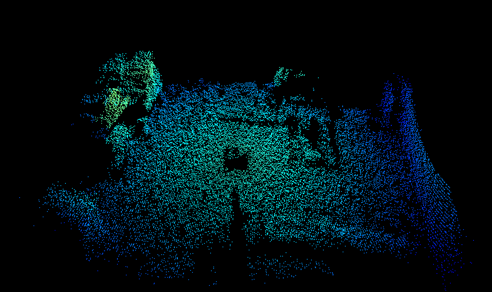
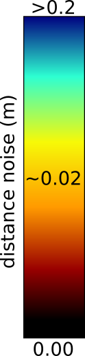
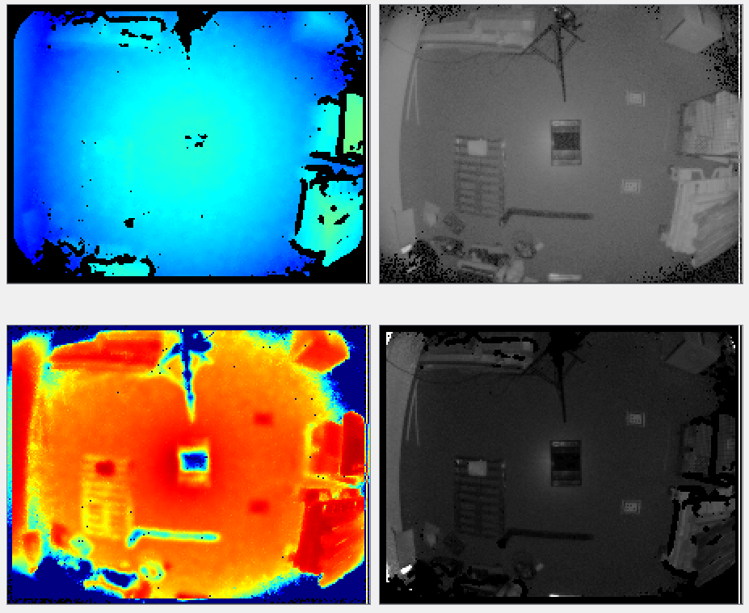

Adaptive noise bilateral filter
Abstract
The O3R software allows for filtering the distance measurement in the spatial domain. The spatial domain of a 3D image can be thought of as the local neighborhood of a pixel, that is, the neighboring pixels X-, Y-, and Z-coordinates. Radial distance information for a pixel is combined with its neighbors’ information to form a new distance image with reduced noise.
The bilateral filter is the preferred spatial filter and is enabled by default. It can be applied with different filter mask sizes, which can be set via the parameter anfFilterSizeDiv2. Larger filter mask sizes allow for stronger noise reduction.
Description
This distance bilateral filter is, in its concept, highly similar to a bilateral filter applied to RGB 2D images. A bilateral filter is a nonlinear edge-preserving smoothing filter. The idea is to replace the pixel value with a weighted average of the information from nearby pixels. The weighting is a combination of the spatial kernel and the range kernel. The O3R implementation additionally incorporates the distance noise estimation for calculating the filter weights.
Note: The weighted average is computed by convolution over the spatial domain. The convolution of the original image and the filter mask returns an image reduced by half the filter size at each image border; that is, with a filter mask of 7x7 pixels, the image is stripped of 7 pixels vertically and horizontally (these pixels are marked as invalid).
The bilateral filter is controlled by the parameter anfFilterSizeDiv2 (turn it off with anfFilterSizeDiv2 = 0). anfFilterSizeDiv2 = 3 sets the filter mask size to a local 7x7 pixel neighborhood.
Note: The bilateral filter is preferred over the median filter because it preserves edge and corner information better (the median filter tends to round corners). It is also possible to apply the bilateral filter with larger filter masks (up to 7x7 pixel masks) compared to 5x5 pixel masks for the median filter. The size of the mask defines how many neighboring pixels are considered when computing a pixel’s value.
Invalid pixels will be ignored during the filtering process and therefore have no impact on the surrounding pixels. Invalid pixels will remain invalid after the filtering.
Example
The following pictures give an overview of the capabilities of spatial filtering with the bilateral filter for different filter mask sizes. All other filters (temporal and median) are deactivated for the purpose of illustrating the bilateral filter’s effect. The maximum allowed distance noise is set at 0.2 m for all images. Note that for maximum distance noise values below 0.2 m the point cloud becomes extremely sparse for smaller filter mask sizes (not shown in the following).
The scene shows a view of our lab, containing various typical objects including a black tote in the center of the room. It is a static scene, which makes it simpler to illustrate the filter’s effect, but these settings (active bilateral filter and inactive temporal filter) are typical for scenes involving motion. Have a look specifically at the distance noise images in the following table. We can see that the distance noise greatly reduces as the filter mask size increases (the color red denotes negligible noise, whereas blue represents noise of around 1 cm and above).
Bilateral filter mask size |
Point cloud |
Distance (top left), amplitude (top right), distance noise (bottom left), and reflectivity images (bottom right) |
|
|---|---|---|---|
0 (filter disabled) |
 |
|
 |
1 (3x3 mask size) |
|
|
|
2 (5x5 mask size) |
|
||
3 (7x7 mask size) |
|
 |


Note: distance information for the black tote in the middle of the image remains extremely hard to compute even with a strong lateral filtering. For better handling of dark objects, have a look at the minimum amplitude, maximum distance noise, and temporal filter).
Scenes involving motion
The spatial filtering can be performed in scenes where motion is present: only the parts of the images that are not affected by movement will be filtered. This differentiation is possible because the detection of motion is performed before the spatial filter in the processing pipeline. It is perfectly fine and encouraged to use large filter mask sizes.
Note: this is not true for temporal filtering, which is not best suited to in-motion cases.